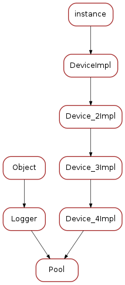

Pool¶
Classes
Pool¶
-
class
Pool(cl, name)[source]¶ Bases:
tango._tango.Device_4Impl,taurus.core.util.log.Logger-
ElementsCache= None¶
-
get_full_name()[source]¶ Compose full name from the TANGO_HOST information and device name.
In case Sardana is used with Taurus 3 the full name is of format “dbhost:dbport/<domain>/<family>/<member>” where dbhost may be either FQDN or PQDN, depending on the TANGO_HOST configuration.
In case Sardana is used with Taurus 4 the full name is of format “tango://dbhost:dbport/<domain>/<family>/<member>” where dbhost is always FQDN.
Returns: this device full name Return type: str
-
pool¶
-
is_ControllerLibList_allowed(req_type)¶
-
is_ControllerClassList_allowed(req_type)¶
-
is_ControllerList_allowed(req_type)¶
-
is_InstrumentList_allowed(req_type)¶
-
is_ExpChannelList_allowed(req_type)¶
-
is_TriggerGateList_allowed(req_type)¶
-
is_AcqChannelList_allowed(req_type)¶
-
is_MotorGroupList_allowed(req_type)¶
-
is_MotorList_allowed(req_type)¶
-
is_MeasurementGroupList_allowed(req_type)¶
-
is_IORegisterList_allowed(req_type)¶
-
is_ComChannelList_allowed(req_type)¶
-
CreateController(argin)[source]¶ Tango command to create controller.
Parameters: argin (list<str>) – Must give either:
- A JSON encoded dict as first string with:
- mandatory keys: ‘type’, ‘library’, ‘klass’ and ‘name’ (values are strings).
- optional keys:
- ‘properties’: a dict with keys being property names and values the property values
- ‘roles’: a dict with keys being controller roles and values being element names. (example: { ‘gap’ : ‘motor21’, ‘offset’ : ‘motor55’ }). Only applicable of pseudo controllers
- a sequence of strings: <type>, <library>, <class>, <name> [, <role_name>’=’<element name>] [, <property name>, <property value>]
Examples:
data = dict(type='Motor', library='DummyMotorController', klass='DummyMotorController', name='my_motor_ctrl_1') pool.CreateController([json.dumps(data)]) pool.CreateController(['Motor', 'DummyMotorController', 'DummyMotorController', 'my_motor_ctrl_2'])
Returns: None
-
CreateInstrument(argin)[source]¶ Tango command to create instrument.
Parameters: argin (list<str>) – Must give either:
- A JSON encoded dict as first string with:
- mandatory keys: ‘full_name’, ‘klass’ (values are strings).
- a sequence of strings: <full_name>, <class>
Examples:
pool.CreateInstrument(['/OH', 'NXhutch']) pool.CreateInstrument(['/OH/Mono', 'NXmonochromator']) pool.CreateInstrument(['/EH', 'NXhutch']) pool.CreateInstrument(['/EH/Pilatus', 'NXdetector'])
Returns: None
-
CreateElement(argin)[source]¶ Tango command to create element (motor, counter/timer, 0D, 1D, 2D, IORegister).
Parameters: argin (list<str>) – Must give either:
- A JSON encoded dict as first string with:
- mandatory keys: ‘type’, ‘ctrl_name’, ‘axis’, ‘name’ (values are strings).
- optional keys:
- ‘full_name’ : a string representing the full tango device name
- a sequence of strings: <type>, <ctrl_name>, <axis>, <name> [, <full_name>]
Examples:
data = dict(type='Motor', ctrl_name='my_motor_ctrl_1', axis='4', name='theta', full_name='BL99/EH/THETA') pool.CreateElement([json.dumps(data)]) pool.CreateElement(['Motor', 'my_motor_ctrl_1', '1', 'phi', 'BL99/EH/PHI'])
Returns: None
-
RenameElement(argin)[source]¶ Tango command to rename the element (rename Pool element and put new alias in the Tango Database).
Parameters: argin – Two elements sequence of strings: <old element name>, <new element name>
Returns: None
-
CreateMotorGroup(argin)[source]¶ Tango command to create motor group.
Parameters: argin (list<str>) – Must give either:
- A JSON encoded dict as first string with:
- mandatory keys: ‘name’, ‘elements’ (with value being a list of moveables)
- optional keys:
- ‘full_name’: with value being a full tango device name
- a sequence of strings: <motor group name> [, <element> ]”
Examples:
data = dict(name='diffrac_motor_group', elements=['theta', 'theta2', 'phi']) pool.CreateMotorGroup([json.dumps(data)]) pool.CreateMotorGroup(['diffrac_mg', 'theta', 'theta2' ])
Returns: None
-
CreateMeasurementGroup(argin)[source]¶ Tango command to create measurement group.
Parameters: argin (list<str>) – Must give either:
- A JSON encoded dict as first string with:
- mandatory keys: ‘name’, ‘elements’ (with value being a list of acquirables)”
- optional keys:
- ‘full_name’: with value being a full tango device name
- a sequence of strings: <motor group name> [, <element> ]”
An acquirable is either a sardana element (counter/timer, 0D, 1D, 2D, motor) or a tango attribute (ex: sys/tg_test/1/short_spectrum_ro)
Examples:
data = dict(name='my_exp_01', elements=['timer', 'C1', 'sys/tg_test/1/double_scalar']) pool.CreateMeasurementGroup([json.dumps(data)]) pool.CreateMeasurementGroup(['my_exp_02', 'timer', 'CCD1', 'sys/tg_test/1/short_spectrum_ro'])
Returns: None
-
DeleteElement(name)[source]¶ Tango command to delete element.
Parameters: argin ( str) – name of element to be deletedReturns: None
-
GetControllerClassInfo(names)[source]¶ Tango command to get detailed information about a controller class.
Parameters: argin ( str) –Must give either:
- A JSON encoded list of controller class names
- a controller class name
Examples:
data = "DummyMotorController", "DummyCounterTimerController" pool.GetControllerClassInfo(json.dumps(data)) pool.GetControllerClassInfo("DummyMotorController")
Returns: a JSON encoded string describing the controller class
Return type: str
-
ReloadControllerLib(lib_name)[source]¶ Tango command to reload the controller library code.
Parameters: argin ( str) – the controller library name (without extension)Returns: None
-